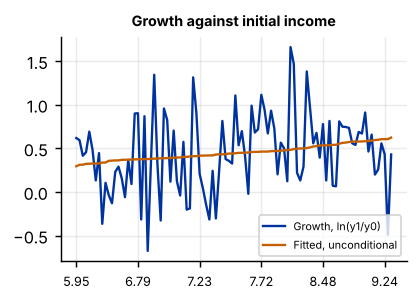

Run this model on your own data in Open Econometric Systems →
Step 1The question and the model
Why are some countries rich, and do poor countries grow faster? In the Solow model, steady-state income per worker depends on the saving rate \(s\) and on \(n + g + \delta\), the sum of population growth, technical progress and depreciation:
The coefficients on \(\ln s\) and \(\ln(n+g+\delta)\) are equal and opposite, and the ratio \(\alpha/(1-\alpha)\) identifies the capital share \(\alpha\). Mankiw, Romer and Weil (1992) add human capital \(h\) (schooling), which adds \(\frac{\beta}{1-\alpha-\beta}\ln h\). Convergence is a statement about growth: with speed \(\lambda\), \(\ln y_T - \ln y_0 = -(1 - e^{-\lambda T})\ln y_0 + \dots\); it is unconditional if growth falls with initial income alone, conditional if it does so once \(s\), \(n\) and \(h\) are held constant. As usual \(g + \delta = 0.05\).
How to write it: the model
We estimate the Mankiw-Romer-Weil model on 98 non-oil countries: the logarithm of 1985 income per working-age person on the logarithms of the investment rate, of \(n + 0.05\) and of the schooling rate, with robust standard errors; we test the Solow restriction that the first two coefficients sum to zero and compute the implied capital share. We then regress growth from 1960 to 1985 on initial income, alone and with the three controls, and report the speed of convergence and the half-life.
Step 2Load the data
import numpy as np
import pandas as pd
import oes_engine as oes # pip install -e open-econometric-systems/oes-engine
d = pd.read_csv("growthdj.csv")
print(len(d), "countries;", (d.oil == "no").sum(), "non-oil;", (d.inter == "yes").sum(), "intermediate sample;", (d.oecd == "yes").sum(), "OECD")
print(d[["gdp60", "gdp85", "invest", "popgrowth", "school"]].describe().round(2).loc[["count", "mean", "min", "max"]])
d["growth"] = np.log(d.gdp85 / d.gdp60) / 25
print("average annual growth 1960-85: mean", round(d.growth.mean() * 100, 2), "%; the 10 poorest in 1960:", round(d.nsmallest(10, "gdp60").growth.mean() * 100, 2), "%; the 10 richest:", round(d.nlargest(10, "gdp60").growth.mean() * 100, 2), "%")121 countries; 98 non-oil; 75 intermediate sample; 22 OECD
gdp60 gdp85 invest popgrowth school
count 116.00 108.00 121.00 107.00 118.00
mean 3681.82 5683.26 18.16 2.28 5.53
min 383.00 412.00 4.10 0.30 0.40
max 77881.00 25635.00 36.90 6.80 12.10
average annual growth 1960-85: mean 1.8 %; the 10 poorest in 1960: 1.88 %; the 10 richest: 0.62 %How to read it
There are 121 countries: 98 non-oil, 75 in the intermediate sample and 22 in the OECD sample. Some variables are missing for some countries (116 values of 1960 income, 108 of 1985 income, 107 of population growth, 118 of schooling), and the engine uses the countries with all of them. Income per worker spans a factor of 200 in 1960 (383 to 77,881). The highest 1960 income is three times the highest 1985 income (25,635), which is the mark of an oil exporter; Mankiw, Romer and Weil drop oil producers, and the sample filter does the same here. Average growth is 1.8% a year; the ten poorest countries in 1960 grew at 1.88% and the ten richest at 0.62%, which looks like convergence but is a comparison of two small groups.
Step 3The Solow regression in levels
spec = dict(y0="gdp60", y1="gdp85", invest="invest", popgrowth="popgrowth", school="school", sample="oil", sample_value="no")
r = oes.run("growth", d.to_csv(index=False), spec)
oes.summary(r)
oes.show(r, "Income per worker in levels")
oes.show(r, "Tests and implied")
oes.show(r, "Restricted regression")Countries: 98
Capital share (restricted): 0.338
Unconditional beta: 0.0943
Conditional beta: -0.2884
Conditional speed lambda: 0.0136
Income per worker in levels (Mankiw-Romer-Weil)
Coefficient Robust s.e. t p
Variable
Constant 6.8444 1.0058 6.8048 0.0000e+00
ln(saving rate) 0.6967 0.1484 4.6944 9.0000e-06
ln(n + g + delta) -1.7452 0.3440 -5.0731 2.0000e-06
ln(human capital) 0.6545 0.0741 8.8272 0.0000e+00
Note: Dependent variable: ln gdp85; 98 countries; R-squared 0.786.
Tests and implied parameters
Statistic p-value Detail
Test
Solow restriction: coefficients on saving and n + g + delta sum to zero (F) 5.2074 0.0247 unrestricted sum = -1.049
Implied capital share alpha (restricted, augmented model) 0.3381 NaN alpha = c_s / (1 + c_s + c_h)
Implied human capital share beta (restricted, augmented model) 0.2571 NaN beta = c_h / (1 + c_s + c_h)
Restricted regression
Coefficient Robust s.e.
Variable
Constant 9.4395 0.3353
ln(s) - ln(n+g+delta) 0.8352 0.1315
ln(human capital) 0.6351 0.0765
Note: R-squared 0.774.How to read it
The coefficients on the saving rate and on \(n + g + \delta\) are 0.70 and -1.75, and the schooling coefficient is 0.65, all with t statistics above 4.6; the R-squared is 0.79. They agree to the second decimal with the values reported by Mankiw, Romer and Weil (0.69, -1.73 and 0.66). The Solow model says the first two coefficients are equal and opposite; their sum is -1.05, and the F test rejects the restriction at 5% (F = 5.21, p = 0.025). The restricted regression gives 0.835 on \(\ln s - \ln(n+g+\delta)\) and 0.635 on schooling, an implied capital share of 0.338 and a human capital share of 0.257, close to the one-third that national accounts suggest. Without schooling the same regression would imply a capital share of about 0.6, which is too large (see below): schooling is correlated with saving, and leaving it out inflates the saving coefficient.
Step 4Convergence
oes.show(r, "Unconditional convergence")
oes.show(r, "Conditional convergence")
oes.plot(r)Unconditional convergence
Coefficient Robust s.e. t p
Variable
Constant -0.2666 0.3386 -0.7873 0.4331
ln gdp60 0.0943 0.0436 2.1621 0.0331
Note: Dependent variable: growth; the coefficient implies no convergence.
Conditional convergence
Coefficient Robust s.e. t p
Variable
Constant 3.0215 0.7373 4.0980 8.9000e-05
ln gdp60 -0.2884 0.0543 -5.3131 1.0000e-06
ln(saving rate) 0.5237 0.1073 4.8814 4.0000e-06
ln(n + g + delta) -0.5057 0.2360 -2.1423 3.4780e-02
ln(human capital) 0.2311 0.0664 3.4805 7.6400e-04
Note: Dependent variable: ln(gdp85/gdp60). Speed of convergence lambda = 0.0136 a year; half-life 50.9 years.
How to read it
Unconditional convergence fails: the coefficient on initial income is +0.094 (t = 2.16), so richer countries grew slightly faster, and the model implies no convergence. Conditional on the saving rate, population growth and schooling it is -0.288 (t = -5.3): countries converge to their own steady states. The implied speed is 1.36% a year, a half-life of 50.9 years, slower than the 2% a year that Barro and Sala-i-Martin found for U.S. states. Saving (+0.52) and schooling (+0.23) raise growth, and population growth (-0.51) lowers it. The chart plots growth against initial income with the unconditional fit, which slopes up.
Step 5Robustness: samples and specification
for name, sp in [("intermediate sample", dict(spec, sample="inter", sample_value="yes")), ("all countries (oil included)", {k: v for k, v in spec.items() if k not in ("sample", "sample_value")})]:
rr = oes.run("growth", d.to_csv(index=False), sp)
t = rr["tables"]
print(f"--- {name}: {rr['nobs']} countries")
print(" level coefficients (s, n+g+d, h):", [round(row[1], 3) for row in t[0]["rows"][1:]], ", Solow restriction p =", t[1]["rows"][0][2])
print(" capital share (augmented):", rr["tables"][1]["rows"][1][1], ", unconditional beta", rr["summary"][2]["value"], ", conditional beta", rr["summary"][3]["value"])
rt = oes.run("growth", d.to_csv(index=False), {k: v for k, v in spec.items() if k != "school"})
print("--- textbook Solow (no schooling):", [round(row[1], 3) for row in rt["tables"][0]["rows"][1:]], ", implied alpha", rt["tables"][1]["rows"][1][1])
rg = oes.run("growth", d.to_csv(index=False), dict(spec, gd=0.03))
print("--- g + delta = 0.03: capital share", rg["summary"][1]["value"])--- intermediate sample: 75 countries level coefficients (s, n+g+d, h): [0.7, -1.5, 0.731] , Solow restriction p = 0.0854 capital share (augmented): 0.3258 , unconditional beta -0.0042 , conditional beta -0.366 --- all countries (oil included): 104 countries level coefficients (s, n+g+d, h): [0.641, -0.753, 0.727] , Solow restriction p = 0.8203 capital share (augmented): 0.2766 , unconditional beta 0.0003 , conditional beta -0.2973 --- textbook Solow (no schooling): [1.424, -1.99] , implied alpha 0.5981 --- g + delta = 0.03: capital share 0.332
How to read it
Sample. In the intermediate sample (75 countries) the level coefficients are 0.70, -1.50 and 0.73, the capital share is 0.326, the Solow restriction is not rejected at 5% (p = 0.085), and the unconditional coefficient is -0.004 (no convergence). With all 104 countries with data, oil producers included, the population-growth coefficient shrinks to -0.75, the capital share to 0.277 and the restriction is not rejected (p = 0.82); conditional convergence remains (-0.297). No schooling. In the textbook model the coefficients are 1.42 and -1.99 and the implied capital share is 0.598. Depreciation and growth. With \(g + \delta = 0.03\) instead of 0.05 the capital share is 0.332 (against 0.338). The qualitative results, no unconditional but strong conditional convergence and a capital share near one third, are stable; the rejection of the Solow restriction is not, and depends on the sample.
Step 6Diagnostics: does the test recover a known capital share?
rng = np.random.default_rng(0)
n = 400
s = rng.uniform(5, 30, n); nn = rng.uniform(0.5, 3, n); h = rng.uniform(2, 15, n)
for a, b in [(1/3, 1/3), (0.6, 0.2)]:
ly = 8 + a/(1-a-b)*(np.log(s/100) - np.log(nn/100 + .05)) + b/(1-a-b)*np.log(h/100) + rng.normal(0, .2, n)
sim = pd.DataFrame(dict(y0=np.exp(ly - 0.3), y1=np.exp(ly), s=s, n=nn, h=h))
rs = oes.run("growth", sim.to_csv(index=False), dict(y0="y0", y1="y1", invest="s", popgrowth="n", school="h"))
print(f"true alpha {a:.3f}: estimated {rs['tables'][1]['rows'][1][1]:.3f}; Solow restriction p = {rs['tables'][1]['rows'][0][2]}")
# violating the restriction: income depends on saving and population growth with unequal weights
ly = 8 + 0.8*np.log(s/100) - 0.3*np.log(nn/100 + .05) + 0.5*np.log(h/100) + rng.normal(0, .2, n)
sim = pd.DataFrame(dict(y0=np.exp(ly - 0.3), y1=np.exp(ly), s=s, n=nn, h=h))
rs = oes.run("growth", sim.to_csv(index=False), dict(y0="y0", y1="y1", invest="s", popgrowth="n", school="h"))
print("restriction violated: p =", rs["tables"][1]["rows"][0][2])true alpha 0.333: estimated 0.343; Solow restriction p = 0.8034 true alpha 0.600: estimated 0.602; Solow restriction p = 0.2376 restriction violated: p = 0.0
How to read it
With a known capital share of one third and a human capital share of one third (400 countries), the estimated capital share is 0.343 and the Solow restriction is not rejected (p = 0.80). With a capital share of 0.6 and 0.2 for human capital, the estimate is 0.602 (p = 0.24). When we build income from saving and population growth with unequal weights (0.8 on saving, -0.3 on population growth), the test rejects with a p-value of 0.0. The test suite checks the coefficients and robust standard errors against statsmodels and the F statistic against the classical restriction test.
Step 7Write the results
How to write it: results
We test the augmented Solow model of Mankiw, Romer and Weil on 98 non-oil countries. The logarithm of 1985 income per working-age person rises with the saving rate (0.70, s.e. 0.15) and schooling (0.65, s.e. 0.07) and falls with \(n + g + \delta\) (-1.75, s.e. 0.34); the R-squared is 0.79. The equal-and-opposite restriction of the Solow model is rejected at 5% (F = 5.21, p = 0.025) in this sample but not in the intermediate sample (p = 0.085) or with oil producers included (p = 0.82). The restricted model implies a capital share of 0.34. There is no unconditional convergence (coefficient on 1960 income +0.094, t = 2.2), but there is conditional convergence (-0.288, t = -5.3), at a speed of 1.4% a year with a half-life of 51 years. These are cross-sectional associations: saving, population growth and schooling are themselves outcomes, so the coefficients are not causal effects.
References. Solow (1956), Quarterly Journal of Economics; Mankiw, Romer and Weil (1992), Quarterly Journal of Economics; Barro and Sala-i-Martin (1992), Journal of Political Economy; Durlauf and Johnson (1995), Journal of Applied Econometrics; Durlauf, Johnson and Temple (2005), Handbook of Economic Growth.